A library, from the very first frame.
Landing-page comparison for the immersive addendum. Each pair uses the same viewport before and after the changes. Screenshots show the local night treatment; a daytime view is included below. The painted cat uses the supplied single sleeping illustration.
Open BookSphere · Acceptance notes · Mobile Lighthouse report
1440 × 900

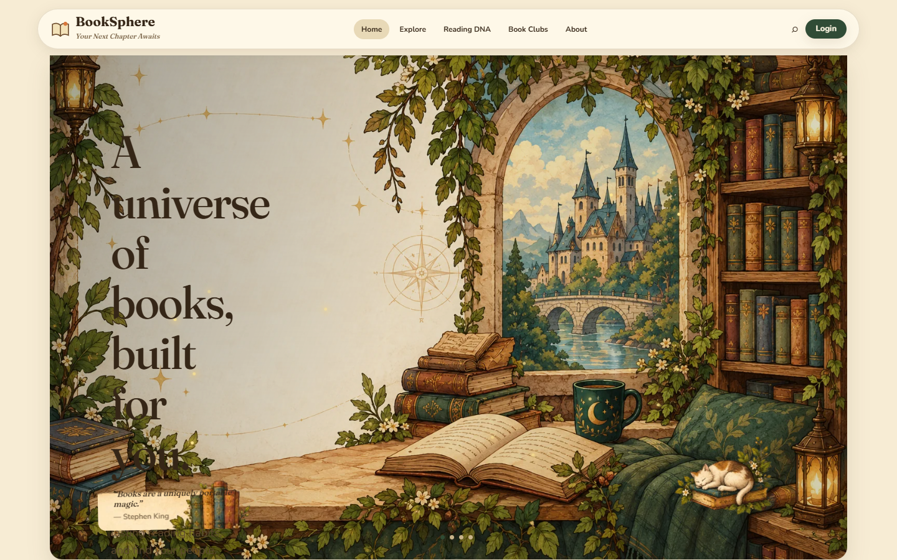

1920 × 1080

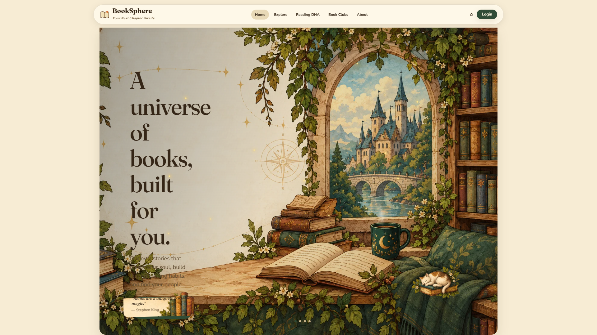

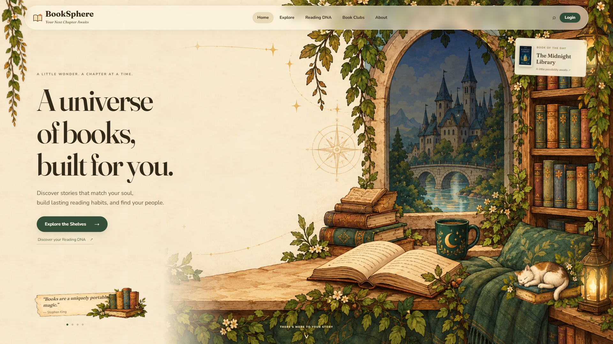
2560 × 1080

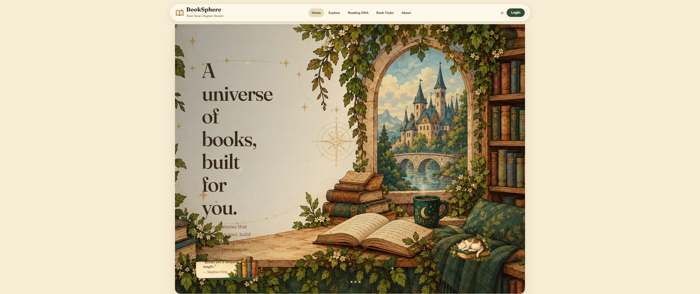

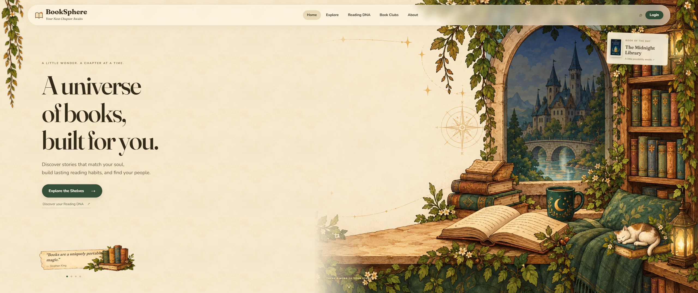
390 × 844

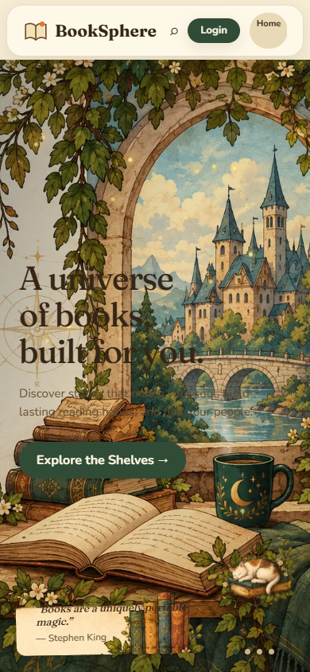

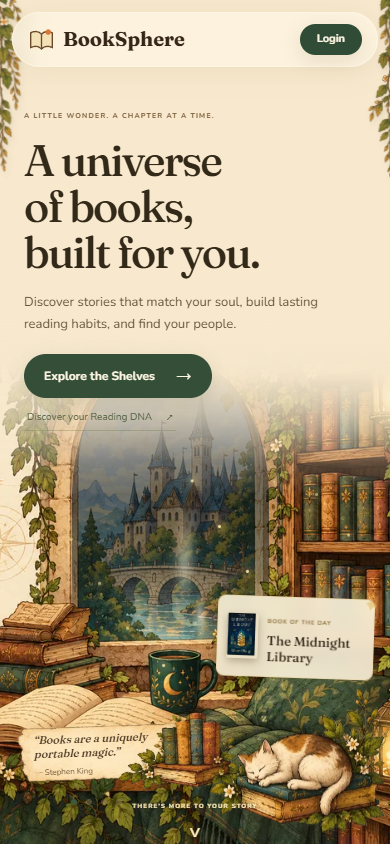
The reading rooms
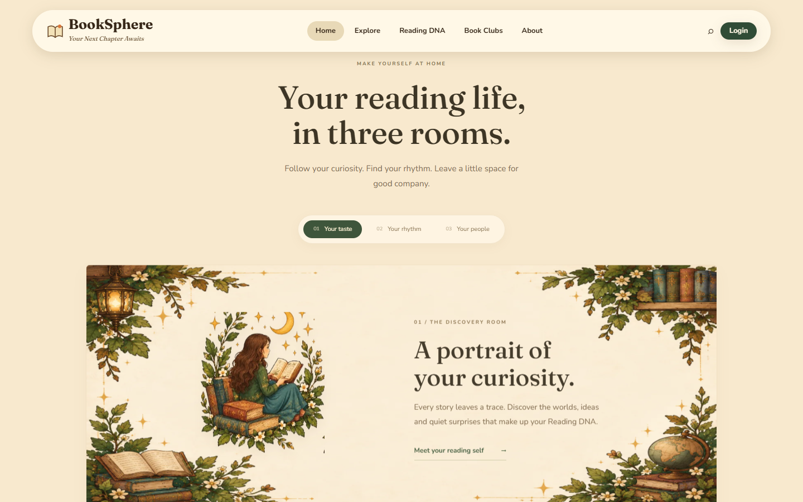
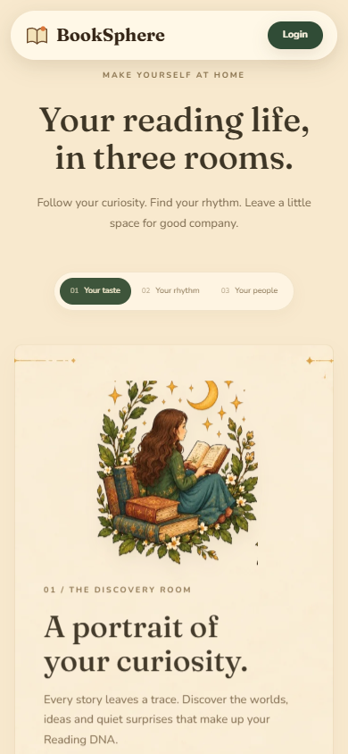
Daylight and reduced motion
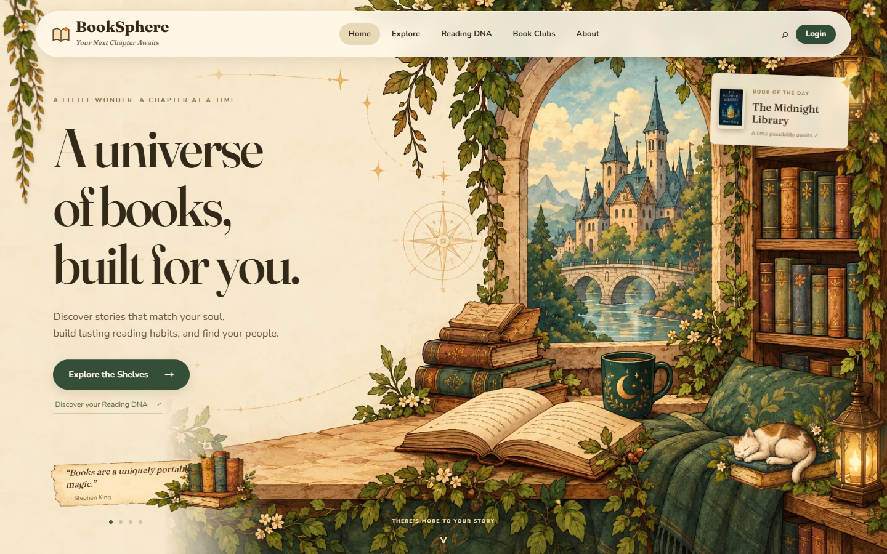
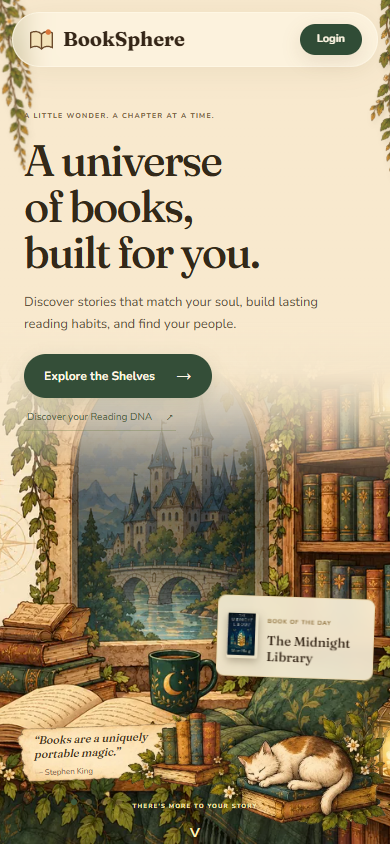